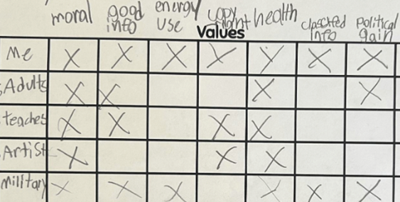
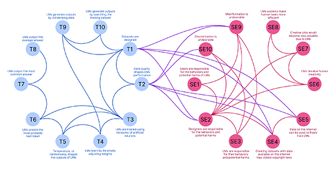
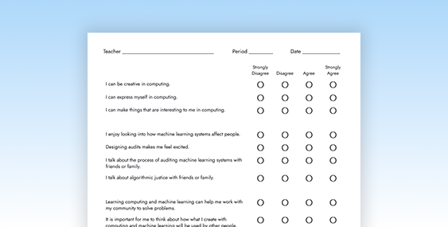
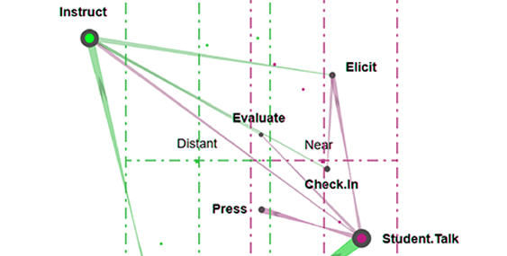
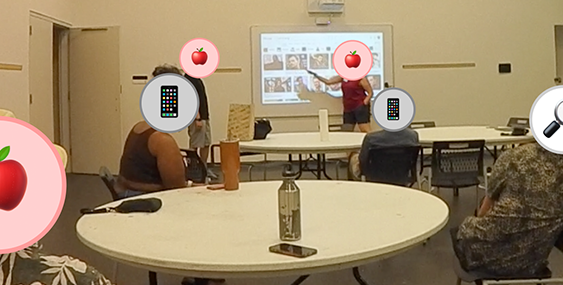
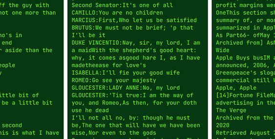
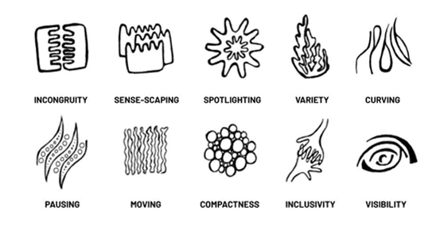

Research
Journal Papers

Conference Proceedings

🏆 Best Full Paper Award 🏆
Building to Understand: Examining Teens’ Technical and Socio-Ethical Pieces of Understandings in the Construction of Small Generative Language Models
Luis Morales-Navarro, Daniel J. Noh, Lucianne Servat, Carly Netting,
Yasmin B. Kafai, Danaé Metaxa
Interaction Design and Children (IDC), 2026
PDF Link



Youth as Advisors in Participatory Design: Situating Teens’ Expertise in Everyday Algorithm Auditing with Teachers and Researchers
Daniel J. Noh, Deborah A. Fields, Luis Morales-Navarro, Alexis
Cabrera-Sutch, Yasmin B. Kafai,
Danaé Metaxa
In Proceedings of the 24th Interaction Design and Children Conference (IDC),
2025
PDF Link

White Papers
